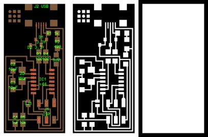
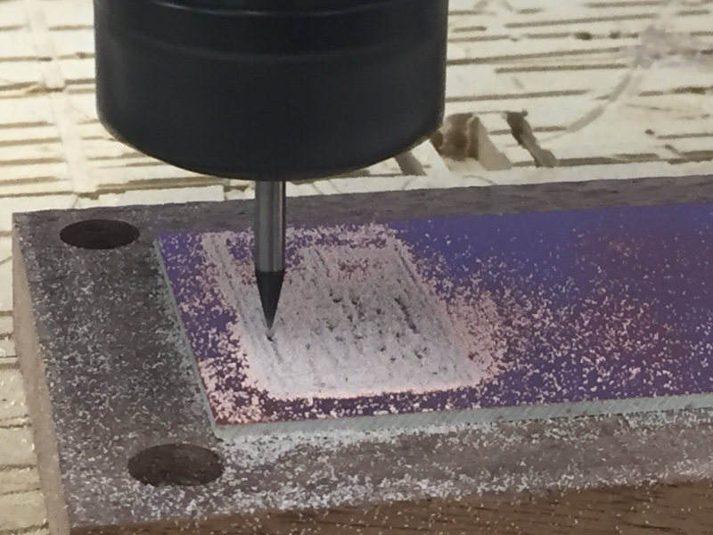
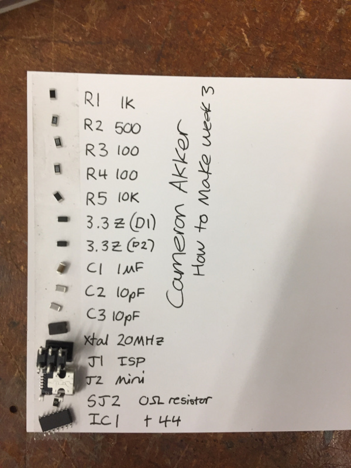

Week 2: Fab In-System Programmer
assignment: make an in-circuit programmer
what I made: in-circuit programmer of Neil's design
Cutting on the Mill and Shopbot
This week's project wasn't as much a creative project as a "learn how the machines work" project. The Harvard lab included two machines capable of cutting a circuit board. I started off on the Roland Mill but moved on to the Shopbot for later cuts due to other people needing to use the Roland Mill.
The traces and interior cut for the board were supplied on the course website in PNG format. These images were passed through the fabmodules software to prepare them for use in the milling machine. A 1/32" end mill was used for cutting out the outline of the board and a 1/64" end mill was used to cut the traces.
The far left side image contains the specific part placement as well as the path layout on the board.
It took about 7 minutes to cut the traces and 1 minute to cut the board out once the whole assembly was configured. The most difficult part of cutting on the mills was zeroing the mill in the z-axis. It took a combination of steady hands and careful wrench tightening to make sure the mill stayed zeroed as it was being installed.
All components used on the board were surface-mount components and the soldering process was relatively straightforward. Programming the programmer involved uploading the firmware to the device via another device. The zero ohm resistor and blob of solder were put in place originally to allow for this firmware programming and they were desoldered once the device was prepared. My ISP was used to program another ISP to confirm that it worked. I included some hot glue on the 2x3 pin header area to make sure that that joint was protected from accidentally being pulled off.